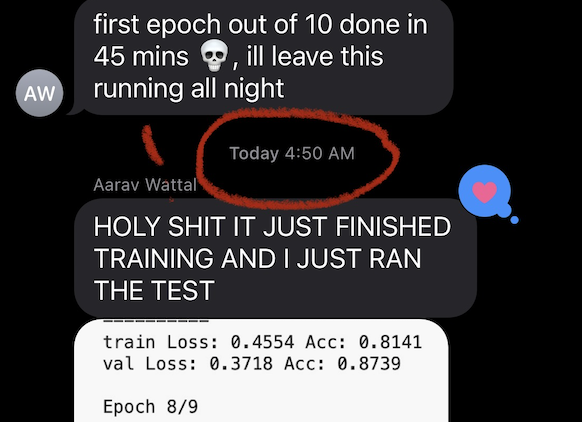
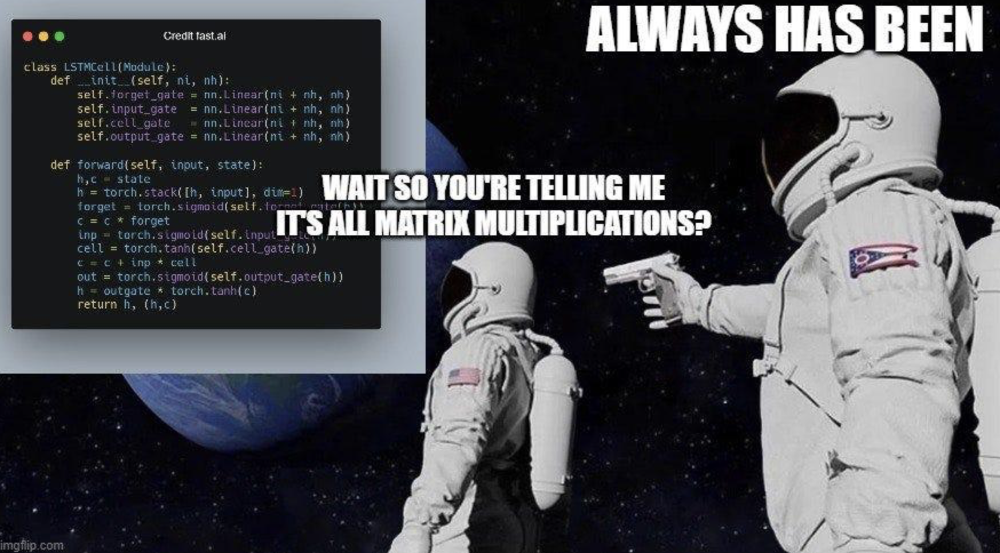
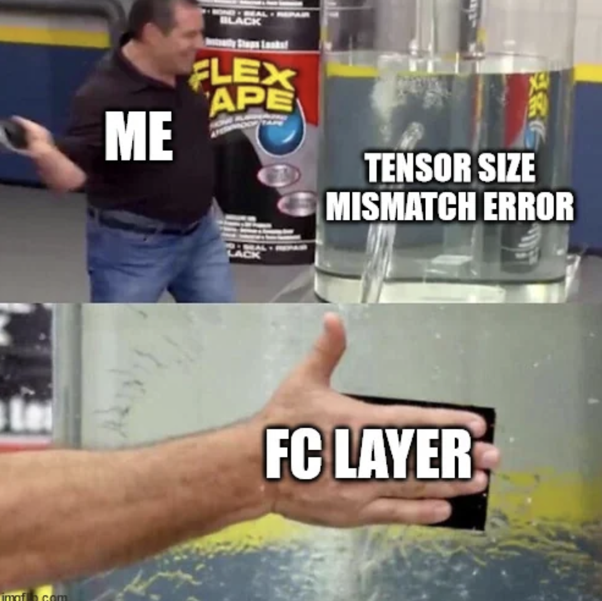

Shape-safe deep learning in Rust on Apple Silicon.
Project notes
If you've ever tried to train an ML model, you've CERTAINLY run into many, many tensor mismatches. If you haven't, you're probably the next Einstein, or honestly, better (so kudos!). But nonetheless, this is a really. Annoying. Issue. Especially if you run into it deep into training.

From the ancient archives (a.k.a, StackOverflow)
- PyTorch Forums: LSTM shape error during evaluation, while training works
- Reddit: Is it normal to struggle with tensor shapes?
- PyTorch Forums: Shape mismatch between seemingly identical tensors
- Medium: Machine Learning — The Great Stagnation
- Stack Overflow: PyTorch matrix shapes cannot be multiplied


In all seriousness, some of these errors don't emerge until the final FC layer in some crazy, deep neural network. While that's a waste of compute, energy, and money, it's worst of all a waste of time! My friend and I were following Rust's development, and we noticed a cool feature -- const-generics. Back in freshman spring, these were a nightly feature of rust (so, a bit iffy, but cool), and we figure that this could be a cool and interesting proof-of-concept for shape-safe deep learning.
Project Log
[01] Getting started with Rust
Oh, Rust. This was not easy to learn before LLMs were "good." A couple challenges here: first off, LLMs (Spring, 2025) were not that great at understanding new languages. Secondly, as a nightly feature, const-generics were not yet 'trained on.' So this required some good ol-fashioned learning. But, the reason that this is specifically possible with Rust is because it's a compiled language! Meaning, we have an initial pass ensuring correctness, resolving dependencies, and then actually generating machine code. This lets us express rules for compatible shapes and reject operations that 'break' rules before spending hours training a model.
I wanna also add an additional note, re: languages. There is ovbiously a reason Python is the primary ML language--tooling (CUDA, etc.) was built out extremely early for it, it's easy to write, and, socially weird if you're not writing ML code in Python. But I'm anticipating a sort of shift here. At some point, and ovbiously further ahead, does it matter if a language is easy to write with LLMs? If we're able to build out tooling early, even for languages that are 'harder' to write, can we reap more benefits of those languages without worrying about usability? Just a thought. This was pre the 'post-language-barrier' anyways, so I did experience some form of unique torture writing a CNN in Rust, so don't call me unempathetic.
[02] Designing the Library
First was designing the structure of the library. We figured that the best design would be to build out a high-level tensor API that was called for shape-checking, then a separate backend call that actually executes.

Based on that design, we'd want to design some tensor system allowing a call like
Tensor2<B, Shape2<M, N>>, where B would
allow for backend selection, and M, N would behave as matrix dimensions. The reason we'd have something like
'Type2,' is
because it was definitely easier to start with something more easily-defined and shape-check-able, like a 2d
tensor, versus higher-level dimensions (to start).
So, this involves defining a couple things in src/ Shape2 and Tensor2.
This will be separately defined
from backend/, nn/, ops/.

[03] Writing Shape2, Tensor2
This was my first great experiment writing in Rust! I started with Shape2, a tiny struct
that carries two dimensions as const-generics. This doesn't store any tensor data--the dimensions are part
of the type itself, so Shape2<2,3> and Shape2<3,2> are different types.
Then, Tensor2 was the next part, which stores actual values in a flat Vec<f32>
By doing this, we're able to ensure that the constructor checks the vector lengths match for multiplication.
With that foundation, I could express shape rules directly in function signatures. So, when defining an
operation,
we could say that multiplication accepts Tensor2<M, K> and Tensor2<K, N>
and outputs Tensor2<M,N>.
This is baked into the function defintion, so the inner dimensions have to agree for the code to compile.
[04] Writing Operations
With Shape2 and Tensor2 in place, the next natural thing was to write multiplications
like matmul.
Matmul is natural because it's easy to check whether it's legal to multiply--the inner dimensions simply have to
match. So, as stated
above, it's possible to bake this check into the defintion as follows:
pub fn matmul<const M: usize, const K: usize, const N: usize>(
left: &Tensor2<M, K>,
right: &Tensor2<K, N>,
) -> Result<Tensor2<M, N>, &'static str>If two tensors share that inner K value, then they fit this signature. But if they don't, then Rust simply can't satisfy the signature. This turns matmul into a rule that Rust can enforce. For the actual computation, I started with three nested loops over the rows, columns, and shared dimension, storing the result in a flat vector. This gave us a straightforward implementation to check our results against before tackling backend acceleration.

[05] Separating shape checks from execution
By the way this structured, we have to write a CPU execution backend. So, a naive CPU backend would store the tensor values in ordinary memory and multiply them using Rust loops. The CPU backend first checks storage lengths and allocates that result, filled with zeros. Then it computes each output element:
for i in 0..m {
for j in 0..n {
for shared in 0..k {
output[i * n + j] +=
left[i * k + shared] * right[shared * n + j];
}
}
}Ovbiously this is a straightforward, single-threaded CPU implementation. It gives a nice working reference for checking a future Metal backend’s results; it isn’t yet an optimized matrix multiplication library.